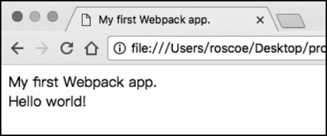
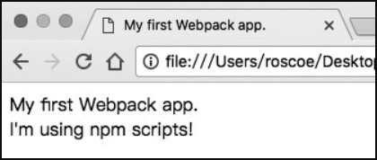
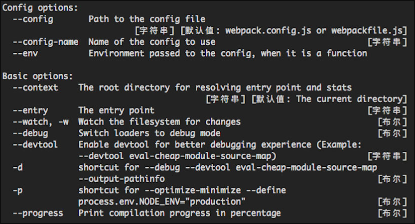
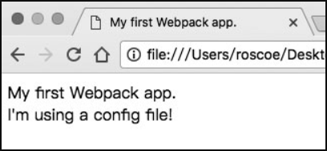
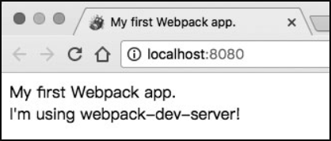

首页 > 编程笔记
Webpack入门教程（简明版）
本教程会对 Webpack 进行大致介绍，让大家对 Webpack 有一个初步的了解，主要内容如下：
如果你已经是一个 Webpack 老手，可以跳过了；假如你对 Webpack 还不是很熟悉，那么本教程会带你快速上手。
没有接触过打包工具的读者可能会疑惑，在 Web 开发中与我们打交道的无非是 HTML、CSS、JS 等静态资源，为什么不直接将工程中的源文件发布到服务器或 CDN，而要交给 Webpack 处理呢？这两者之间有什么不同？
接下来我们就来阐述使用 Webpack 的意义。
但是，当应用的规模大了之后，就必须借助一定的工具，否则人工维护代码的成本将逐渐变得难以承受。使用工具可以让开发效率成倍地提升，所谓“工欲善其事，必先利其器”就是这个意思。
说回 Webpack，既然它解决的最主要问题是模块打包，那么为了更好地阐述 Webpack 的作用，我们必须先谈谈模块。
在设计程序结构时，把所有代码都堆到一起是非常糟糕的做法。更好的组织方式是按照特定的功能将其拆分为多个代码段，每个代码段实现一个特定的目的。你可以对其进行独立的设计、开发和测试，最终通过接口来将它们组合在一起。这就是基本的模块化思想。
如果把程序比作一个城市，这个城市内部有不同的职能部门，如学校、医院、消防局等。程序中的模块就像这些职能部门一样，每一个都有其特定的功能。各个模块协同工作，才能保证程序的正常运转。
对于 JavaScript 来说，情况则有所不同。在过去的很长一段时间里，JavaScript 这门语言并没有模块这一概念。如果工程中有多个 JS 文件，我们只能通过 script 标签将它们一个个插入页面中。
为何偏偏 JavaScript 没有模块呢？
如果要追溯历史原因，JavaScript 之父 Brendan Eich 最初设计这门语言时只是将它定位成一个小型的脚本语言，用来实现网页上一些简单的动态特性，远没有考虑到会用它实现今天这样复杂的场景，模块化当然也就显得多余了。
随着技术的发展，JavaScript 已经不仅仅用来实现简单的表单提交等功能，引入多个 script 文件到页面中逐渐成为一种常态，但我们发现这种做法有很多缺点，比如：
模块化则解决了上述所有问题：
从 2009 年开始，JavaScript 社区开始对模块化进行不断的尝试，并先后给出了 AMD、CommonJS、CMD 等解决方案。但这些都只是由社区提出的，并不能算作语言本身的特性。而在 2015 年，ECMAScript 6.0（ES6）正式定义了 JavaScript 模块标准，使这门语言在诞生了 20 年之后终于拥有了模块这一概念。
ES6 模块标准目前已经得到了大多数现代浏览器的支持，但在实际应用方面还需要等待一段时间，主要有以下几点原因：
那么，如何才能让我们的工程在使用模块化的同时也能正常运行在浏览器中呢？这就到了模块打包工具出场的时候了。
模块打包工具的工作方式主要分为两种：
目前社区中比较流行的模块打包工具有 Webpack、Vite、Parcel、Rollup 等。
以上我们对 Webpack 进行了简要介绍，但是说再多也不如实际操作一次，现在上手试一试吧。
Webpack 对 Node.js 的版本是有一定要求的，推荐使用 Node.js 的 LTS（Long Term Support，长期维护）版本。
LTS 版本是 Node.js 在“当前阶段”较为稳定的版本，具体版本号及发布计划可以到 https://github.com/nodejs/Release 自行查看。LTS 版本中不会包含过于激进的特性，并且已经经过了一定时间的检验，比较适合生产环境。大多数 Node.js 模块也都会依照 LTS 版本的特性提供支持。
Node.js 官网（https://nodejs.org/）一般都会把 LTS 版本放在较为醒目的位置，用户根据自己的系统环境进行下载和安装即可。安装完成后，打开命令行并执行 node-v，不出意外的话会显示当前 Node.js 的版本号，代表已经安装成功。
接下来，我们需要使用 Node.js 的包管理器 npm 来安装 Webpack。使用过 npm 的读者应该知道，安装模块的方式有两种：一种是全局安装，一种是本地安装。
对于 Webpack 来说，我们也有这两种选择：
这里建议使用本地安装的方式，主要有以下两点原因：
基于以上两点，我们选择在工程内部安装 Webpack。
首先新建一个工程目录，从命令行进入该目录，并执行 npm 的初始化命令。
然后，我们会看到目录中生成了一个 package.json 文件，它相当于 npm 项目的说明书，里面记录了项目名称、版本、仓库地址等信息。
接下来执行安装 Webpack 的命令：
安装结束之后，在命令行执行 npx webpack -v 以及 npx webpack-cli -v，可显示版本号即证明安装成功。
Webpack 帮我们完成了一项最基本的模块组装工作，现在回顾一下刚刚输入的指令。
命令行的第1个参数 entry 是资源打包的入口。Webpack 从这里开始进行模块依赖的查找，找到 index.js 和 add-content.js 两个模块，并通过它们来生成最终产物。
命令行的第2个参数 output-filename 是输出资源名。你会发现打包完成后工程中出现了一个 dist 目录，其中包含的 main.js 就是 Webpack 的打包结果。
最后的参数 mode 指的是打包模式。Webpack 为开发者提供了 development、production、none 三种模式。
当置于 development 和 production 模式下时，它会自动添加适合当前模式的一系列配置，减少了人为的工作量。在开发环境下，一般设置为 development 模式就可以了。
为了验证打包结果，可以用浏览器打开 index.html。项目中的 index.js 和 content.js 现在已经成为 bundle.js，被页面加载和执行，并输出了各自的内容。
编辑工程中的 package.json 文件：
为了验证打包结果，可以对 add-content.js 的内容稍加修改：
在工程中创建一个 src 目录，并将 index.js 和 add-content.js 移动到该目录下。对于资源输出目录来说，Webpack 已经默认是 /dist，我们不需要做任何改动。
另外需要提到的是，Webpack 默认的源代码入口就是 src/index.js，因此现在可以省略 entry 的配置了。
编辑package.json：
我们可以通过 Webpack 的帮助命令来进行查看：
从之前我们在 package.json 中添加的脚本命令来看，当项目需要越来越多的配置时，就要往命令中添加更多的参数，那么到后期维护起来就会相当困难。为了解决这个问题，可以把这些参数改为对象的形式专门放在一个配置文件里，在 Webpack 每次打包的时候读取该配置文件即可。
Webpack 的默认配置文件为 webpack.config.js（也可以使用其他文件名，需要使用命令行参数指定）。现在让我们在工程根目录下创建 webpack.config.js，并添加如下代码：
目前该对象包含两个关于资源输入输出的属性——entry 和 output。entry 就是我们的资源入口，output 则是一个包含更多详细配置的对象。
在 Webpack 配置中，我们经常会遇到这种层叠的属性关系。这是由于 Webpack 本身的配置实在太多，如果都放在同一级会难以管理，因此出现了这种多级配置。当开发者要修改某个配置项时，通过层级关系找下来会更加清晰、快捷。
之前的参数 --output-filename 和 --output-path 现在都成为 output 下面的属性。filename 和先前一样都是 bundle.js，不需要改动，而 path 和之前有所区别。
Webpack 对于 output.path 的要求是使用绝对路径（从系统根目录开始的完整路径），之前我们在命令行中为了简洁而使用了相对路径。而在 webpack.config.js 中，我们通过调用 Node.js 的路径拼装函数 path.join，将 __dirname（Node.js 内置全局变量，值为当前文件所在的绝对路径）与 dist（输出目录）连接起来，得到了最终的资源输出路径。
现在我们可以去掉 package.json 中配置的打包参数了：
你可能会发现，单纯使用 Webpack 以及它的命令行工具来进行开发调试的效率并不高。以往只要编辑项目源文件（JS、CSS、HTML 等），刷新页面即可看到效果，现在多了一步打包，即我们在改完项目源码后要执行 npm run build 更新 bundle.js，然后才能刷新页面生效。有没有更简便的方法呢？
其实 Webpack 社区已经为我们提供了一个便捷的本地开发工具——webpack-dev-server。
用以下命令进行安装：
假如工程上线时要进行依赖安装，就可以通过 npm install --only=prod 过滤掉 devDependencies 中的冗余模块，从而加快安装和发布的速度。
为了便捷地启动 webpack-dev-server，我们在 package.json 中添加一个 dev 指令：
webpack-dev-server 可以看作一个服务者，它的主要工作就是接收浏览器的请求，然后将资源返回。
当服务启动时，它会先让 Webpack 进行模块打包并将资源准备好（在示例中就是 bundle.js）。当webpack-dev-server 接收到浏览器的资源请求时，它会首先进行 URL 地址校验：
综上我们可以总结出 webpack-dev-server 的两大职能：
最后，在启动服务之前，我们还是更改一下 add-content.js：
这里有一点需要注意。直接用 Webpack 开发和使用 webpack-dev-server 有一个很大的区别，前者每次都会生成 main.js，而 webpack-dev-server 只是将打包结果放在内存中，并不会写入实际的 bundle.js，在每次 webpack-dev-server 接收到请求时都只是将内存中的打包结果返回给浏览器。
这一点可以通过删除工程中的 dist 目录来验证，你会发现即便 dist 目录不存在，刷新页面后功能仍然是正常的。从开发者的角度来看，这其实是符合情理的。在本地开发阶段我们经常会调整目录结构和文件名，如果每次都写入实际文件，最后就会产生一些没用的垃圾文件，还会干扰我们的版本控制，因此 webpack-dev-server 的处理方式显得更加简洁。
webpack-dev-server 还有一项很便捷的特性——live-reloading（自动刷新）。例如我们保持本地服务启动以及浏览器打开的状态，到编辑器中去更改 add-content.js：
当然，还有更先进的 hot-module-replacement（模块热替换），它甚至不需要刷新浏览器就能获取更新之后的内容。由于篇幅限制，这里不再赘述。
在安装 Webpack 时我们一般选择在项目本地安装的方式，这样可以使团队开发时共用一个版本，并且可以让其他插件直接获取 Webpack 的内部模块。
配置本地开发环境可以借助 npm scripts 来维护命令行脚本，当打包脚本参数过多时，我们需要将其转化为 webpack.config.js，用文件的方式维护复杂的 Webpack 配置。
webpack-dev-server 的作用是启动一个本地服务，可以处理打包资源与静态文件的请求。它的 live-reloading 功能可以监听文件变化，自动刷新页面来提升开发效率。
- Webpack 是什么
- 使用 Webpack 的意义；
- 安装 Webpack；
- 如何开始一个 Webpack 工程。
如果你已经是一个 Webpack 老手，可以跳过了；假如你对 Webpack 还不是很熟悉，那么本教程会带你快速上手。
1. Webpack 是什么？
Webpack 是一个开源的 JavaScript 模块打包工具，其最核心的功能是解决模块之间的依赖，把各个模块按照特定的规则和顺序组织在一起，最终合并为一个 JS 文件，这个过程就叫作模块打包。有时会合并为多个 JS 文件，这里讨论的只是最基本的情况。
你可以把 Webpack 理解为一个模块处理工厂。我们把源代码交给 Webpack，由它去进行加工、拼装处理，产出最终的资源文件，等待送往用户。没有接触过打包工具的读者可能会疑惑，在 Web 开发中与我们打交道的无非是 HTML、CSS、JS 等静态资源，为什么不直接将工程中的源文件发布到服务器或 CDN，而要交给 Webpack 处理呢？这两者之间有什么不同？
接下来我们就来阐述使用 Webpack 的意义。
2. 为什么需要Webpack？
开发一个简单的 Web 应用，其实只需要浏览器和一个简单的编辑器就可以了。最早的 Web 应用就是这么开发的，因为需求很简单。但是，当应用的规模大了之后，就必须借助一定的工具，否则人工维护代码的成本将逐渐变得难以承受。使用工具可以让开发效率成倍地提升，所谓“工欲善其事，必先利其器”就是这个意思。
说回 Webpack，既然它解决的最主要问题是模块打包，那么为了更好地阐述 Webpack 的作用，我们必须先谈谈模块。
1) 模块是什么？
我们每时每刻都在与模块打交道，比如，在工程中引入一个日期处理的 npm 包，或者编写一个提供工具方法的 JS 文件，这些包和文件都可以称为模块。在设计程序结构时，把所有代码都堆到一起是非常糟糕的做法。更好的组织方式是按照特定的功能将其拆分为多个代码段，每个代码段实现一个特定的目的。你可以对其进行独立的设计、开发和测试，最终通过接口来将它们组合在一起。这就是基本的模块化思想。
如果把程序比作一个城市，这个城市内部有不同的职能部门，如学校、医院、消防局等。程序中的模块就像这些职能部门一样，每一个都有其特定的功能。各个模块协同工作，才能保证程序的正常运转。
2) JavaScript中的模块
在大多数程序语言（如 C、C++、Java）中，开发者都可以直接使用模块进行开发。工程中的各个模块在经过编译、链接等过程后会被整合成单一的可执行文件并交由系统运行。对于 JavaScript 来说，情况则有所不同。在过去的很长一段时间里，JavaScript 这门语言并没有模块这一概念。如果工程中有多个 JS 文件，我们只能通过 script 标签将它们一个个插入页面中。
为何偏偏 JavaScript 没有模块呢？
如果要追溯历史原因，JavaScript 之父 Brendan Eich 最初设计这门语言时只是将它定位成一个小型的脚本语言，用来实现网页上一些简单的动态特性，远没有考虑到会用它实现今天这样复杂的场景，模块化当然也就显得多余了。
随着技术的发展，JavaScript 已经不仅仅用来实现简单的表单提交等功能，引入多个 script 文件到页面中逐渐成为一种常态，但我们发现这种做法有很多缺点，比如：
- 需要手动维护 JavaScript 的加载顺序。页面的多个 script 之间通常会有依赖关系，但由于这种依赖关系是隐式的，除了添加注释以外很难清晰地指明谁依赖了谁，所以当页面中加载的文件过多时很容易出现问题。
- 每一个 script 标签都意味着需要向服务器请求一次静态资源，在 HTTP 2 还没有出现的时期，建立连接的成本是很高的，过多的请求会严重拖慢网页的渲染速度。
- 在每个 script 标签中，顶层作用域即全局作用域，没有任何处理而直接在代码中进行变量或函数声明会污染全局作用域。
模块化则解决了上述所有问题：
- 通过导入和导出语句我们可以清晰地看到模块间的依赖关系。
- 模块可以借助工具来进行打包，所以在页面中只需要加载合并后的资源文件，减少了网络开销。
- 多个模块之间的作用域是隔离的，彼此不会有命名冲突。
从 2009 年开始，JavaScript 社区开始对模块化进行不断的尝试，并先后给出了 AMD、CommonJS、CMD 等解决方案。但这些都只是由社区提出的，并不能算作语言本身的特性。而在 2015 年，ECMAScript 6.0（ES6）正式定义了 JavaScript 模块标准，使这门语言在诞生了 20 年之后终于拥有了模块这一概念。
ES6 模块标准目前已经得到了大多数现代浏览器的支持，但在实际应用方面还需要等待一段时间，主要有以下几点原因：
- 无法使用代码分片（code splitting）和删除死代码（tree shaking）（Webpack 的两个特别重要的特性）。
- 大多数 npm 模块还是 CommonJS 的形式，而浏览器并不支持其语法，因此这些包没有办法直接拿来用。
- 仍然需要考虑个别浏览器及平台的兼容性问题。
那么，如何才能让我们的工程在使用模块化的同时也能正常运行在浏览器中呢？这就到了模块打包工具出场的时候了。
3) 模块打包工具
模块打包工具（module bundler）的任务就是解决模块间的依赖，使其打包后的结果能运行在浏览器上。模块打包工具的工作方式主要分为两种：
- 将存在依赖关系的模块按照特定规则合并为单个 JS 文件，一次全部加载进页面中。
- 在页面初始时加载一个入口模块，异步加载其他模块。
目前社区中比较流行的模块打包工具有 Webpack、Vite、Parcel、Rollup 等。
4) 为什么选择 Webpack？
对比同类模块打包工具，Webpack 具备以下几点优势。① Webpack 默认支持多种模块标准
Webpack 可以支持包括 AMD、CommonJS 以及最新的 ES6 模块，而其他工具大多只能支持一到两种。Webpack 对于一些同时使用多种模块标准的工程非常有用，它会帮我们处理好不同类型模块之间的依赖关系。② Webpack 有完备的代码分片解决方案
从字面意思去理解，它可以分割打包后的资源，在首屏只加载必要的部分，将不太重要的功能放到后面动态加载。这对于资源体积较大的应用来说尤为重要，可以有效地减小资源体积，提升首页渲染速度。③ Webpack 可以处理各种类型的资源
除了 JavaScript 以外，Webpack 还可以处理样式、模板，甚至图片等，而开发者需要做的仅仅是导入它们。比如你可以从 JavaScript 文件导入一个 CSS 或者 PNG，而这一切最终都可以由 Webpack 的 loader 来处理。④ Webpack 拥有庞大的社区支持
除了 Webpack 核心库以外，还有无数开发者来为它编写周边插件和工具。对于绝大多数的需求，你都可以直接在社区找到已有解决方案，甚至会找到多个解决方案。以上我们对 Webpack 进行了简要介绍，但是说再多也不如实际操作一次，现在上手试一试吧。
3. Webpack 安装
Webpack 对于操作系统没有要求，使用 Windows、Mac、Linux 操作系统均可。它唯一的依赖就是 Node.js，下面来进行安装。Webpack 对 Node.js 的版本是有一定要求的，推荐使用 Node.js 的 LTS（Long Term Support，长期维护）版本。
LTS 版本是 Node.js 在“当前阶段”较为稳定的版本，具体版本号及发布计划可以到 https://github.com/nodejs/Release 自行查看。LTS 版本中不会包含过于激进的特性，并且已经经过了一定时间的检验，比较适合生产环境。大多数 Node.js 模块也都会依照 LTS 版本的特性提供支持。
Node.js 官网（https://nodejs.org/）一般都会把 LTS 版本放在较为醒目的位置，用户根据自己的系统环境进行下载和安装即可。安装完成后，打开命令行并执行 node-v，不出意外的话会显示当前 Node.js 的版本号，代表已经安装成功。
接下来，我们需要使用 Node.js 的包管理器 npm 来安装 Webpack。使用过 npm 的读者应该知道，安装模块的方式有两种：一种是全局安装，一种是本地安装。
对于 Webpack 来说，我们也有这两种选择：
- 全局安装 Webpack 的好处是 npm 会帮我们绑定一个命令行环境变量，一次安装、处处运行；
- 本地安装 Webpack 则会添加其为项目中的依赖，只能在项目内部使用。
这里建议使用本地安装的方式，主要有以下两点原因：
- 如果选择全局安装，那么在与他人进行项目协作的时候，由于每个人系统中的 Webpack 版本不同，可能会导致输出结果不一致。
- 部分依赖于 Webpack 的插件会调用项目中 Webpack 的内部模块，这种情况下仍然需要在项目本地安装 Webpack，而如果全局和本地都有，则容易造成混淆。
基于以上两点，我们选择在工程内部安装 Webpack。
首先新建一个工程目录，从命令行进入该目录，并执行 npm 的初始化命令。
npm init # 如果你使用 yarn，则为 yarn init此时会要求你输入项目的基本信息，因为这里只是为了生成一个示例，根据提示操作就好。
然后，我们会看到目录中生成了一个 package.json 文件，它相当于 npm 项目的说明书，里面记录了项目名称、版本、仓库地址等信息。
接下来执行安装 Webpack 的命令：
npm install webpack webpack-cli -D # or yarn yarn add webpack webpack-cli –D这里我们同时安装了 webpack 以及 webpack-cli。webpack 是核心模块，webpack-cli 则是命令行工具，在本例中两者都是必需的。
安装结束之后，在命令行执行 npx webpack -v 以及 npx webpack-cli -v，可显示版本号即证明安装成功。
注意：由于我们将 Webpack 安装在了本地，因此无法直接在命令行内使用 webpack 指令，工程内部只能使用 npx webpack <command> 的形式。
4. 打包第一个应用
现在让我们趁热打铁来打包刚刚的示例工程。如果你是第一次接触 Webpack，建议按照下面的指引一步步进行操作。代码中不熟悉的地方也不必深究，这个示例只是为了让我们直观地认识 Webpack 的一些特性。1) Hello World
首先，我们在工程目录下添加以下几个文件。① index.js 文件
import addContent from './add-content.js';
document.write('My first Webpack app.<br />');
addContent();
add-content.js：
export default function() {
document.write('Hello world!');
}
② add-content.js 文件
export default function() {
document.write('Hello world!');
}
③ index.html 文件
<!DOCTYPE html>
<html lang="zh-CN">
<head>
<meta charset="UTF-8">
<title>My first Webpack app.</title>
</head>
<body>
<script src="./main.js"></script>
</body>
</html>
然后在控制台输入打包命令：
npx webpack --entry=./index.js --mode=development用浏览器打开 index.html，这时应该可以看到在页面上会显示“My first Webpack app. Hello world!”，如图1所示。

图1：index.html 输出结果
图1：index.html 输出结果
Webpack 帮我们完成了一项最基本的模块组装工作，现在回顾一下刚刚输入的指令。
命令行的第1个参数 entry 是资源打包的入口。Webpack 从这里开始进行模块依赖的查找，找到 index.js 和 add-content.js 两个模块，并通过它们来生成最终产物。
命令行的第2个参数 output-filename 是输出资源名。你会发现打包完成后工程中出现了一个 dist 目录，其中包含的 main.js 就是 Webpack 的打包结果。
最后的参数 mode 指的是打包模式。Webpack 为开发者提供了 development、production、none 三种模式。
当置于 development 和 production 模式下时，它会自动添加适合当前模式的一系列配置，减少了人为的工作量。在开发环境下，一般设置为 development 模式就可以了。
为了验证打包结果，可以用浏览器打开 index.html。项目中的 index.js 和 content.js 现在已经成为 bundle.js，被页面加载和执行，并输出了各自的内容。
2) 使用 npm scripts
从上面的例子不难发现，我们每进行一次打包都要输入一段冗长的命令，这样做不仅耗时，而且容易出错。为了使命令行指令更简洁，可以在 package.json 中添加一个脚本命令。编辑工程中的 package.json 文件：
……
"scripts": {
"build": "webpack --entry=./index.js --mode=development"
},
……
scripts 是 npm 提供的脚本命令功能，在这里我们可以直接使用由模块添加的指令（比如用 webpack 取代之前的 npx webpack）。为了验证打包结果，可以对 add-content.js 的内容稍加修改：
export default function() {
document.write('I\'m using npm scripts!');
}
重新打包，这次输入 npm 命令即可：
npm run build打开浏览器验证效果，如图2所示。

图2：index.html内容变为“I'm using npm scripts!”
图2：index.html内容变为“I'm using npm scripts!”
3) 使用默认目录配置
上面的 index.js 是放在工程根目录下的，而通常情况下我们会分别设置源码目录与资源输出目录。比如，工程源代码放在 /src 中，输出资源放在 /dist 中。在工程中创建一个 src 目录，并将 index.js 和 add-content.js 移动到该目录下。对于资源输出目录来说，Webpack 已经默认是 /dist，我们不需要做任何改动。
另外需要提到的是，Webpack 默认的源代码入口就是 src/index.js，因此现在可以省略 entry 的配置了。
编辑package.json：
……
"scripts": {
"build": "webpack --output-filename=bundle.js --mode=development"
},
……
虽然目录命名并不是强制的，且 Webpack 提供了配置项让我们进行更改，但还是建议遵循统一的命名规范，这样会使得大体结构比较清晰，也利于多人协作。
4) 使用配置文件
为了满足不同应用场景的需求，Webpack 拥有非常多的配置项以及相对应的命令行参数。我们可以通过 Webpack 的帮助命令来进行查看：
npx webpack –h部分参数如图3所示。

图3：Webpack 配置参数
图3：Webpack 配置参数
从之前我们在 package.json 中添加的脚本命令来看，当项目需要越来越多的配置时，就要往命令中添加更多的参数，那么到后期维护起来就会相当困难。为了解决这个问题，可以把这些参数改为对象的形式专门放在一个配置文件里，在 Webpack 每次打包的时候读取该配置文件即可。
Webpack 的默认配置文件为 webpack.config.js（也可以使用其他文件名，需要使用命令行参数指定）。现在让我们在工程根目录下创建 webpack.config.js，并添加如下代码：
module.exports = {
entry: './src/index.js',
output: {
filename: 'main.js',
},
mode: 'development',
}
上面通过 module.exports 导出了一个对象，也就是打包时被 Webpack 接收的配置对象。先前在命令行中输入的一大串参数就都要改为 key-value 的形式放在这个对象中。目前该对象包含两个关于资源输入输出的属性——entry 和 output。entry 就是我们的资源入口，output 则是一个包含更多详细配置的对象。
在 Webpack 配置中，我们经常会遇到这种层叠的属性关系。这是由于 Webpack 本身的配置实在太多，如果都放在同一级会难以管理，因此出现了这种多级配置。当开发者要修改某个配置项时，通过层级关系找下来会更加清晰、快捷。
之前的参数 --output-filename 和 --output-path 现在都成为 output 下面的属性。filename 和先前一样都是 bundle.js，不需要改动，而 path 和之前有所区别。
Webpack 对于 output.path 的要求是使用绝对路径（从系统根目录开始的完整路径），之前我们在命令行中为了简洁而使用了相对路径。而在 webpack.config.js 中，我们通过调用 Node.js 的路径拼装函数 path.join，将 __dirname（Node.js 内置全局变量，值为当前文件所在的绝对路径）与 dist（输出目录）连接起来，得到了最终的资源输出路径。
现在我们可以去掉 package.json 中配置的打包参数了：
……
"scripts": {
"build": "webpack"
},
……
为了验证最终效果，我们再对 add-content.js 的内容稍加修改：
export default function() {
document.write('I\'m using a config file!');
}
执行 npm run build 命令，Webpack 就会预先读取 webpack.config.js，然后打包。完成之后我们打开 index.html 进行验证，结果如图4所示。

图4：index.html内容变为“I'm using a config file!”
图4：index.html内容变为“I'm using a config file!”
5) webpack-dev-server
到这里，其实我们已经把 Webpack 的初始环境配置好了。你可能会发现，单纯使用 Webpack 以及它的命令行工具来进行开发调试的效率并不高。以往只要编辑项目源文件（JS、CSS、HTML 等），刷新页面即可看到效果，现在多了一步打包，即我们在改完项目源码后要执行 npm run build 更新 bundle.js，然后才能刷新页面生效。有没有更简便的方法呢？
其实 Webpack 社区已经为我们提供了一个便捷的本地开发工具——webpack-dev-server。
用以下命令进行安装：
npm install webpack-dev-server -D安装指令中的
-D参数是将 webpack-dev-server 作为工程的 devDependencies（开发环境依赖）记录在 package.json中。这样做是因为 webpack-dev-server 仅仅在本地开发时才会用到，在生产环境中并不需要它，所以放在 devDependencies 中是比较恰当的。假如工程上线时要进行依赖安装，就可以通过 npm install --only=prod 过滤掉 devDependencies 中的冗余模块，从而加快安装和发布的速度。
为了便捷地启动 webpack-dev-server，我们在 package.json 中添加一个 dev 指令：
……
"scripts": {
"build": "webpack",
"dev": "webpack-dev-server"
},
……
最后，我们还需要对 webpack-dev-server 进行配置。编辑 webpack.config.js：
module.exports = {
entry: './src/index.js',
output: {
filename: './main.js',
},
mode: 'develpoment',
devServer: {
publicPath: '/dist',
},
};
可以看到，我们在配置中添加了一个 devServer 对象，它是专门用来放 webpack-dev-server 配置的。webpack-dev-server 可以看作一个服务者，它的主要工作就是接收浏览器的请求，然后将资源返回。
当服务启动时，它会先让 Webpack 进行模块打包并将资源准备好（在示例中就是 bundle.js）。当webpack-dev-server 接收到浏览器的资源请求时，它会首先进行 URL 地址校验：
- 如果该地址是资源服务地址（上面配置的 publicPath），webpack-dev-server 就会从 Webpack 的打包结果中寻找该资源并返回给浏览器。
- 反之，如果请求地址不属于资源服务地址，则直接读取硬盘中的源文件并将其返回。
综上我们可以总结出 webpack-dev-server 的两大职能：
- 令Webpack进行模块打包，并处理打包结果的资源请求。
- 作为普通的Web Server，处理静态资源文件请求。
最后，在启动服务之前，我们还是更改一下 add-content.js：
export default function() {
document.write('I\'m using webpack-dev-server!');
}
一切就绪，执行 npm run dev 命令并用浏览器打开 http://localhost:8080/，可以看到如图5所示的输出结果。

图5：index.html内容变为“I'm using webpack-dev-server!”
图5：index.html内容变为“I'm using webpack-dev-server!”
这里有一点需要注意。直接用 Webpack 开发和使用 webpack-dev-server 有一个很大的区别，前者每次都会生成 main.js，而 webpack-dev-server 只是将打包结果放在内存中，并不会写入实际的 bundle.js，在每次 webpack-dev-server 接收到请求时都只是将内存中的打包结果返回给浏览器。
这一点可以通过删除工程中的 dist 目录来验证，你会发现即便 dist 目录不存在，刷新页面后功能仍然是正常的。从开发者的角度来看，这其实是符合情理的。在本地开发阶段我们经常会调整目录结构和文件名，如果每次都写入实际文件，最后就会产生一些没用的垃圾文件，还会干扰我们的版本控制，因此 webpack-dev-server 的处理方式显得更加简洁。
webpack-dev-server 还有一项很便捷的特性——live-reloading（自动刷新）。例如我们保持本地服务启动以及浏览器打开的状态，到编辑器中去更改 add-content.js：
export default function() {
document.write('This is from live-reloading!');
}
此时切回到浏览器，你会发现浏览器的内容自动更新了，这就是 live-reloading 的功能。当 webpack-dev-server 发现工程源文件进行了更新操作后就会自动刷新浏览器，显示更新后的内容。该特性可以提升本地开发的效率。当然，还有更先进的 hot-module-replacement（模块热替换），它甚至不需要刷新浏览器就能获取更新之后的内容。由于篇幅限制，这里不再赘述。
5. 小结
本教程我们介绍了 Webpack 的功能：它可以处理模块之间的依赖，将它们串联起来合并为单一的 JS 文件。在安装 Webpack 时我们一般选择在项目本地安装的方式，这样可以使团队开发时共用一个版本，并且可以让其他插件直接获取 Webpack 的内部模块。
配置本地开发环境可以借助 npm scripts 来维护命令行脚本，当打包脚本参数过多时，我们需要将其转化为 webpack.config.js，用文件的方式维护复杂的 Webpack 配置。
webpack-dev-server 的作用是启动一个本地服务，可以处理打包资源与静态文件的请求。它的 live-reloading 功能可以监听文件变化，自动刷新页面来提升开发效率。
关注公众号「站长严长生」，在手机上阅读所有教程，随时随地都能学习。内含一款搜索神器，免费下载全网书籍和视频。

微信扫码关注公众号